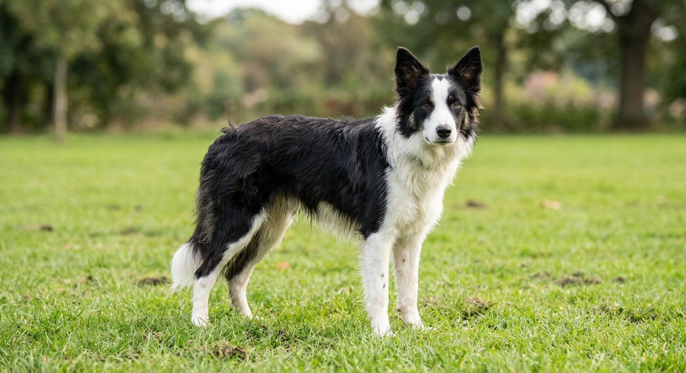
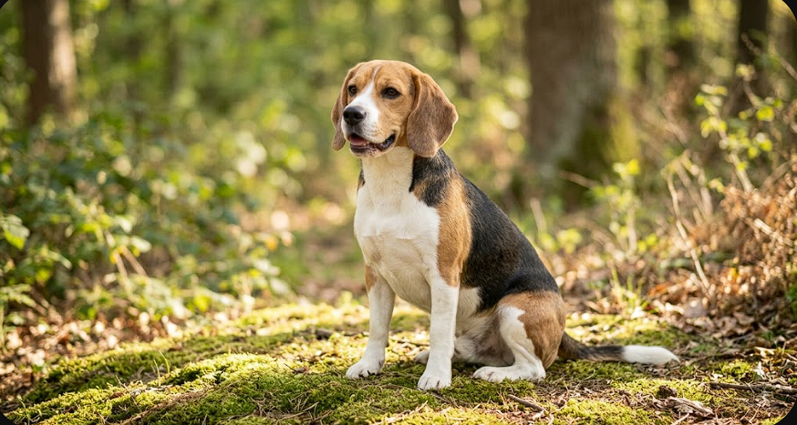
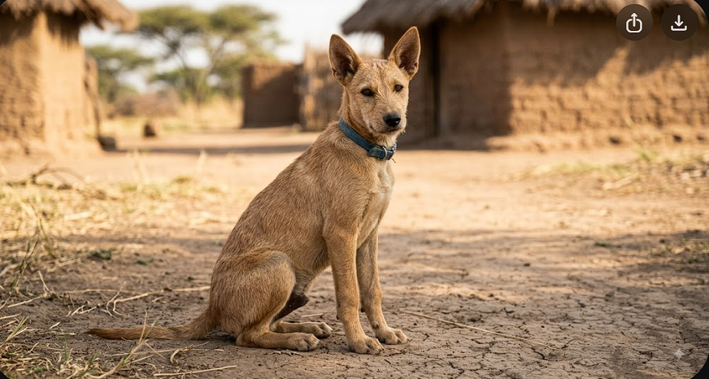
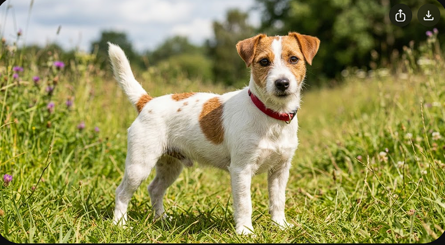
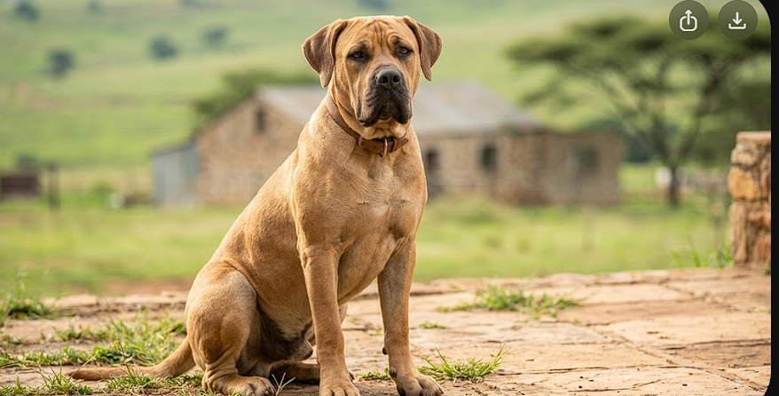
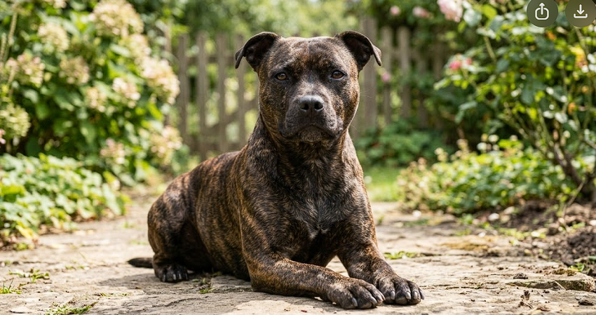

Pippa

- Breed: Border Collie cross
- Age: 2 years
- Size: Medium
- Fee: R950
Pippa is quick, curious and needs a job to do. She is best suited to an active household with a secure garden.
Grace Animal Sanctuary
All our animals are sterilised, vaccinated, and dewormed before going home.
| Category | Fee | Included |
|---|---|---|
| Puppy (under 6 months) | R1 100 | Vet check, vaccinations, deworming, sterilisation |
| Adult dog | R950 | Vet check, vaccinations, deworming, sterilisation |
| Senior dog (7+ years) | R450 | Vet check, vaccinations, deworming, sterilisation |

Pippa is quick, curious and needs a job to do. She is best suited to an active household with a secure garden.

Bandit is sociable and gets on with everyone he meets. He follows his nose everywhere, so a properly secured garden is essential.

Tumi was raised in foster care alongside children and cats. He is house-trained and knows sit, down and wait.

Skattie is blind in one eye and it has never slowed her down. She should be approached from her sighted side and suits a home without very small children.

Kaya is a good-natured young dog who has had almost no training and will grow to around 45kg. She needs an experienced owner, not a first-time one.

Bella is affectionate and completely reliable with people. She does not tolerate other dogs and needs to be the only animal in the home.